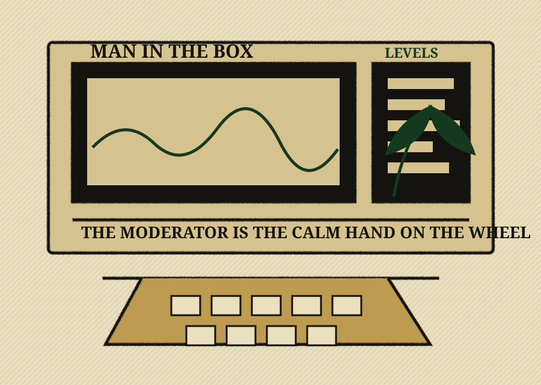

The Moderator Desk
The unsung hero behind the mic.
The moderator is one of the most integral roles in Bud Rich Radio: part director, part audience proxy, part pacing manager, part broadcast seatbelt.

Role at a glance
While often off-camera, the moderator controls the flow, controls the visual narrative, represents the inquisitive listener, prevents rambling, and keeps energy, pacing, and clarity intact. Without a moderator, the show risks becoming circular, disorganized, inside-baseball, and difficult for new listeners to follow.
The moderator is not a co-host competing for airtime. They are the guide rail that keeps the show moving forward.
The moderator is
- Director: StreamYard and visuals
- Inquisitive mind
- Audience proxy
- Pacing manager
- Conversation catalyst
- Problem solver
The moderator is not
- A lecturer
- A dominant personality
- A background tech with no voice
- A passive observer
Technical authority
The moderator has operational control of StreamYard: choosing who is on screen, managing solo views, split screens, roundtable layouts, muting and unmuting participants, bringing people in and out smoothly, and making sure the audience always knows who is speaking and why.
The inquisitive student
When no additional co-host is present, the moderator may step into the role of the inquisitive student. They ask clarifying questions, ask what the audience is likely thinking, transition between topics naturally, and encourage deeper explanation without teaching over the host.
- Can you break that down for people newer to this?
- What does that actually look like in practice?
- Why does that matter to someone growing at home?
- What is the mistake people usually make here?
Tactical interruption
A moderator can interrupt when the conversation is drifting, a point needs clarification, someone is being talked over, a key idea is being skipped, or time management requires it. The interruption should be brief, respectful, and purpose-driven.